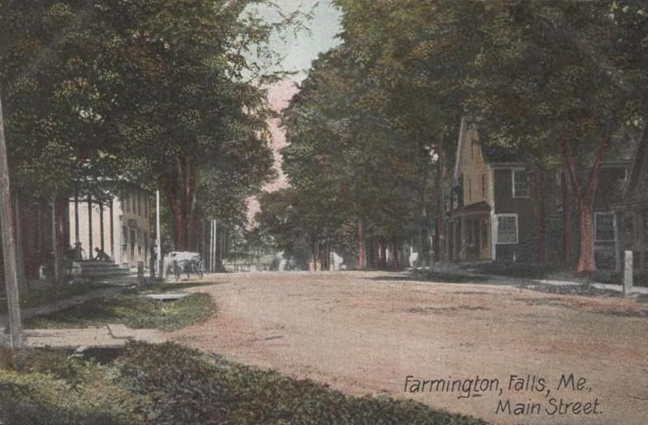
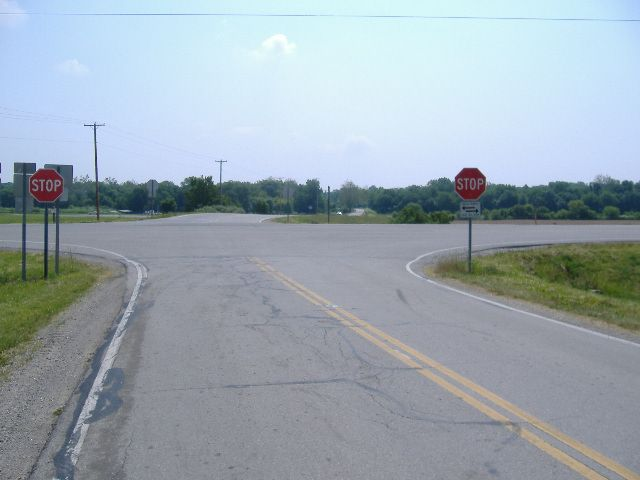

Biography
Francis Tufts enlisted from the Maine frontier, served at Dorchester Heights, and lived to become a Freewill Baptist minister. In 1831, in his late eighties, he set out by wagon for Ohio, where he died two years later.
Service Record
Town: Medford; Lincoln Co., Me.; Farmington, Me.; Ohio · Dates: 1744 – 1833
Born 21 July 1744 in Medford; died 2 Oct. 1833 at Yankeetown, Ohio; Freewill Baptist minister. (Tufts Kinsmen, Vol. I, p. 128–130, family no. 20-1; owner-supplied extract; page scan not on file)
Private, enlisting from Lincoln County, Me.: ten months in the Massachusetts militia, beginning by dislodging Tories stealing cattle on the Penobscot River; later at Tiverton, R.I., and at Dorchester Heights during the evacuation of the King’s troops from Boston. Pension 4 Oct. 1823. (Tufts Kinsmen, Vol. I, p. 128–130, family no. 20-1; owner-supplied extract; page scan not on file)
Built the first mill at Farmington Falls, 1788; ruling elder and deacon of the Farmington church; met his nephew Charles Tufts (later benefactor of Tufts College) in Medford before his 1831 wagon trip to Ohio. (Tufts Kinsmen, Vol. I, p. 128–130, family no. 20-1; owner-supplied extract; page scan not on file)
Family Connection
Family number 20-1 in Tufts Kinsmen, Vol. I. Parents are not named in the extract seen.
Spouse(s)
Not found in the sources checked (Brooks 1855 Register of Families; Wild; Find a Grave data on file; Tufts Kinsmen Vol. I extract).
Authoritative IDs / Index Numbers
| Source | ID / status |
|---|---|
| Perseus person index (auth=) | auth=tufts,francis. This is a name-level key shared by every Francis Tufts in Perseus, not a personal ID. Use it with the passages cited on this page. |
| Find a Grave memorial | Uncertain: 78802812 (from a search summary only). Flagged; not used. |
| Brooks, History of Medford (1855) register no. | Checked, no entry confidently matched |
| Tufts Kinsmen, Vol. I family no. | 20-1 |
| Mass. Soldiers and Sailors | Not yet checked for this page |
| DAR ancestor no. | Not yet checked (the DAR GRS needs a browser session) |
| FamilySearch ID | Not yet checked (FamilySearch is blocked from this machine; owner to check) |
| Geni profile | Not yet checked (Geni requires sign-in) |
| WikiTree ID | Not yet checked (WikiTree API refused requests on 3 Nov. 2026: rate limit) |
| Town / vital records | Medford VRs not yet checked by volume and page |
Only IDs confirmed against dates and family are given as matches. “Not yet checked” means the source has not been searched; “Checked, not found” means it was searched without a match.
⚑ Unverified
The Tufts Kinsmen Vol. I statements on this page come from an extract supplied by the owner and have not yet been checked against a page scan (citation rule: page scan not on file). No other source on this site has yet been checked for this man.
Pictures




_-_general_view.jpg){kind=link}



Tufts House, Farmington
An 1810 brick house built by “Francis Tufts, a brickmaker” may be his; the identity is Unverified. See Places.
Further Research Links
Outside resources for further research. Secondary and user-contributed sites (blogs, family trees, memorial sites, Wikipedia) are not verified here.
- PDF p. 80 / Full PDF / Full book PDF (biography p. 80) (Internet Archive)
- Tiverton (Wikipedia)
- Penobscot Expedition (Wikipedia)
- Francis Tufts Memorial – Mainville Cemetery, Maineville, Warren County, Ohio (Find a Grave)
- Tufts House (Farmington, Maine) – 1810 brick house built by Francis Tufts (Wikipedia)
- Maine Historic Preservation Commission – Tufts House profile (maine.gov)
- Tufts Genealogy Blog – Revolutionary Soldiers (includes Francis Tufts 1744 service details) (Tufts Genealogy blog)